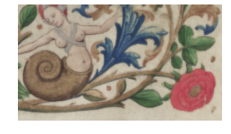
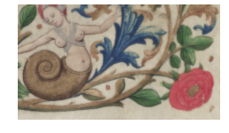

Utility
Last modified: May 17, 2022
Contents
NestedLists
nested_list_to_image
Image [OneBit|GreyScale|Grey16|RGB|Float|Complex] nested_list_to_image (object nested_list, Choice [ONEBIT|GREYSCALE|GREY16|RGB|FLOAT] image_type)
| Returns: | Image [OneBit|GreyScale|Grey16|RGB|Float|Complex] |
|---|---|
| Category: | Utility/NestedLists |
| Defined in: | image_utilities.py |
| Author: | Michael Droettboom and Karl MacMillan |
Converts a nested Python list to an Image. Is the inverse of to_nested_list.
- nested_list
- A nested Python list in row-major order. If the list is a flat list, an image with a single row will be created.
- image_type
The resulting image type. Should be one of the integer Image type constants (ONEBIT, GREYSCALE, GREY16, RGB, FLOAT). If image_type is not provided or less than 0, the image type will be determined by auto-detection from the list. The following list shows the mapping from Python type to image type:
- int -> GREYSCALE
- float -> FLOAT
- RGBPixel -> RGB
To obtain other image types, the type number must be explicitly passed.
NOTE: This will not scale very well and should only be used for small images, such as convolution kernels.
Examples:
# Sobel kernel (implicitly will be a FLOAT image)
kernel = nested_list_to_image([[0.125, 0.0, -0.125],
[0.25 , 0.0, -0.25 ],
[0.125, 0.0, -0.125]])
# Single row image (note that nesting is optional)
image = nested_list_to_image([RGBPixel(255, 0, 0),
RGBPixel(0, 255, 0),
RGBPixel(0, 0, 255)])
to_nested_list
object to_nested_list ()
| Operates on: | Image [OneBit|GreyScale|Grey16|RGB|Float|Complex] |
|---|---|
| Returns: | object |
| Category: | Utility/NestedLists |
| Defined in: | image_utilities.py |
| Author: | Michael Droettboom and Karl MacMillan |
Converts an image to a nested Python list. This method is the inverse of nested_list_to_image.
The following table describes how each image type is converted to Python types:
- ONEBIT -> int
- GREYSCALE -> int
- GREY16 -> int
- RGB -> RGBPixel
- FLOAT -> float
NOTE: This will not scale very well and should only be used for small images, such as convolution kernels.
ccs_from_labeled_image
[object] ccs_from_labeled_image ()
| Operates on: | Image [OneBit] |
|---|---|
| Returns: | [object] |
| Category: | Utility |
| Defined in: | image_utilities.py |
| Author: | Christoph Dalitz and Hasan Yildiz |
Returns all Cc's represented by unique labels in the given onebit image. The bounding boxes are computed as tight as possible.
This is mostly useful for reading manually labeled groundtruth data from color PNG files in combination with the plugin colors_to_labels. Example:
labeled = rgb.colors_to_labels()
ccs = labeled.ccs_from_labeled_image()
clip_image
Image [OneBit|GreyScale|Grey16|RGB|Float|Complex] clip_image (Rect other)
| Operates on: | Image [OneBit|GreyScale|Grey16|RGB|Float|Complex] |
|---|---|
| Returns: | Image [OneBit|GreyScale|Grey16|RGB|Float|Complex] |
| Category: | Utility |
| Defined in: | image_utilities.py |
| Author: | Michael Droettboom and Karl MacMillan |
Crops an image so that the bounding box includes only the intersection of it and another image. Returns a zero-sized image if the two images do not intersect.
generate_features
generate_features (list features, bool force)
| Operates on: | Image [OneBit] |
|---|---|
| Category: | Utility |
| Defined in: | features.py |
| Author: | Michael Droettboom and Karl MacMillan |
Generates features for the image by calling a number of feature functions and storing the results in the image's features member variable (a Python array).
- features
- Optional. A list of feature function names. If not given, the previously set feature functions will be used. If none were previously given, all available feature functions will be used. Using all feature functions can also be forced by passing 'all'.
Warning
For efficiency, if the given feature functions match those that have been already generated for the image, the features are not recalculated. If you want to force recalculation, pass the optional argument force=True.
image_copy
Image [OneBit|GreyScale|Grey16|RGB|Float|Complex] image_copy (Choice [DENSE|RLE] storage_format)
| Operates on: | Image [OneBit|GreyScale|Grey16|RGB|Float|Complex] |
|---|---|
| Returns: | Image [OneBit|GreyScale|Grey16|RGB|Float|Complex] |
| Category: | Utility |
| Defined in: | image_utilities.py |
| Author: | Michael Droettboom and Karl MacMillan |
Copies an image along with all of its underlying data. Since the data is copied, changes to the new image do not affect the original image.
- storage_format
- specifies the compression type for the returned copy:
- DENSE (0)
- no compression
- RLE (1)
- run-length encoding compression
image_save
image_save (FileSave image_file_name, Choice [TIFF|PNG] File format)
| Operates on: | Image [OneBit|GreyScale|Grey16|RGB|Float|Complex] |
|---|---|
| Category: | Utility |
| Defined in: | image_utilities.py |
| Author: | Michael Droettboom and Karl MacMillan |
Saves an image to file with specified name and format.
mse
float mse (Image [RGB] None)
| Operates on: | Image [RGB] |
|---|---|
| Returns: | float |
| Category: | Utility |
| Defined in: | image_utilities.py |
| Author: | Michael Droettboom and Karl MacMillan |
Calculates the mean square error between two images.
pad_image
Image [OneBit|GreyScale|Grey16|RGB|Float|Complex] pad_image (int top, int right, int bottom, int left, Pixel value)
| Operates on: | Image [OneBit|GreyScale|Grey16|RGB|Float|Complex] |
|---|---|
| Returns: | Image [OneBit|GreyScale|Grey16|RGB|Float|Complex] |
| Category: | Utility |
| Defined in: | image_utilities.py |
| Author: | Michael Droettboom and Karl MacMillan |
Pads an image with any value. When no pixel value is given, the value corresponding to the color white is used.
- top
- Padding on the top.
- right
- Padding on the right.
- bottom
- Padding on the bottom.
- left
- Padding on the left.
- value
- An optional pixel value of the pixel type of the image. When omitted or set to None, the color white is used for padding.
Example 1: pad_image(5, 10, 15, 20)
 

reset_onebit_image
reset_onebit_image ()
| Operates on: | Image [OneBit] |
|---|---|
| Category: | Utility |
| Defined in: | image_utilities.py |
| Author: | Christoph Dalitz |
Resets all black pixel values in a onebit image to one. This can be necessary e.g. after a CC analysis which sets black pixels to some other label value.
subimage
Image [OneBit|GreyScale|Grey16|RGB|Float|Complex] subimage (Point upper_left, Point lower_right)
| Operates on: | Image [OneBit|GreyScale|Grey16|RGB|Float|Complex] |
|---|---|
| Returns: | Image [OneBit|GreyScale|Grey16|RGB|Float|Complex] |
| Category: | Utility |
| Defined in: | plugin.py |
| Author: | Michael Droettboom and Karl MacMillan |
Creates a new view on existing data.
There are a number of ways to create a subimage:
- subimage(Point upper_left, Point lower_right)
- subimage(Point upper_left, Size size)
- subimage(Point upper_left, Dim dim)
- subimage(Rect rectangle)
Changes to subimages will affect all other subimages viewing the same data.
Warning
The upper_left and lower_right coordinates are absolute and not relative to the image origin. Hence, for all practical use cases, you must add the image offset to the coordinates, e.g.
subimg = image.subimage(Point(p.x + image.offset_x, p.y + image.offset_y), dim)
# or, equivalently:
subimg = image.subimage(p + image.ul, dim)
trim_image
Image [OneBit|GreyScale|Grey16|Float|RGB] trim_image (Pixel PixelValue = None)
| Operates on: | Image [OneBit|GreyScale|Grey16|Float|RGB] |
|---|---|
| Returns: | Image [OneBit|GreyScale|Grey16|Float|RGB] |
| Category: | Utility |
| Defined in: | image_utilities.py |
| Author: | Tobias Bolten |
Returns minimal view so that outside of the view only Pixels with PixelValue exists. When no PixelValue is given, white is used.